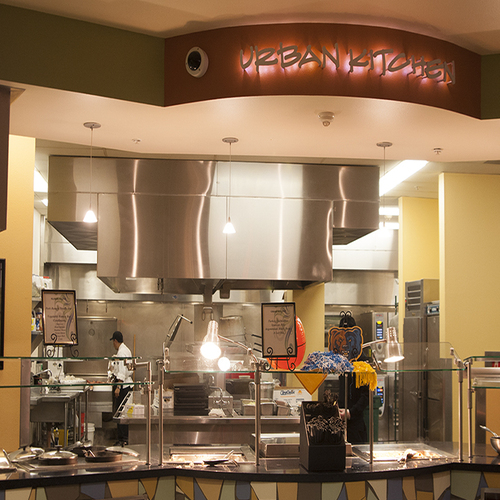
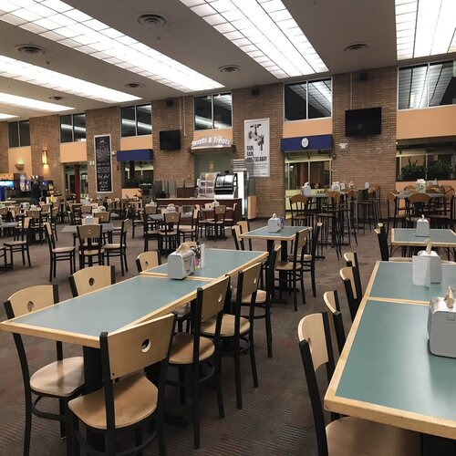
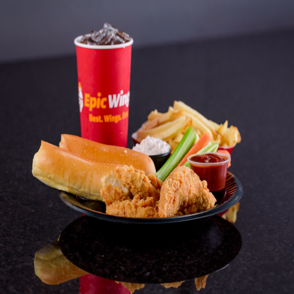
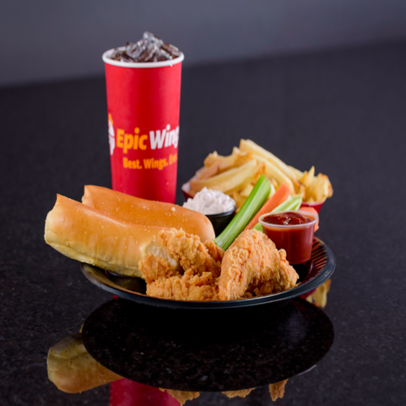

Mariana Sanchez
I am Mariana Sanchez, a dedicated full-time student pursuing my degree in Chicano Studies at UCR. Concurrently, I work part-time at UCR Dining, making significant contributions to the UCR community.
My academic journey at UCR has unfolded as a compelling mix of challenges and rewards. As a Chicano Studies major, my passion drives my commitment to cultivating critical thinking skills that will undoubtedly shape my future.
UCR's dynamic learning environment has not only expanded my understanding but has also furnished me with the essential tools for success in my chosen career.
Beyond the conventional classroom and office settings, my interests manifest in diverse environments. I actively engage in reading, participate in various UCR clubs, and maintain a rigorous study routine. These interests transcend mere hobbies; they are integral components
of both my career and personal development. Whether navigating the precision required for active club involvement, meticulously scheduling reading time, or gracefully collaborating in continuous study, each activity significantly contributes to my overall growth. These experiences bring not only deep joy but also
refine crucial skills such as effective time management, organizational prowess, and the cultivation of a spirit of teamwork,
enriching both my everyday life and my aspirations for the future.
Motivated by a profound curiosity in Chicano Studies, my ultimate goal is to become a professor excelling in communicating the intricate aspects of Chicano history and culture. The pursuit of an undergraduate degree in Chicano Studies strategically lays the foundation for this success. Subsequently, I aspire to delve even
deeper into the
subject by pursuing a graduate degree, whether a master's or Ph.D.,
to further comprehend its intricacies and enhance my research skills.
My developmental trajectory encompasses active participation in conferences, scholarly efforts, and immersion in significant study initiatives. The application of knowledge in real-world teaching situations, whether through delivering lectures or engaging in assistantships, is integral to refining my educational abilities. The final steps toward achieving my goal of
becoming a professor of
Chicano Studies encompass building meaningful relationships within the academic community, disseminating research findings, and cultivating a noticeable academic presence. This comprehensive approach ensures a nuanced understanding of the subject matter, positioning me as an informed and capable member of the academic community,
ready to guide upcoming researchers in the fascinating realm of Chicano heritage.
Experience
UCR Dining Employee
• Daily cooking and cleaning
• Engaging with Students in a daily basis
• Conversating in English and Spanish
Member of the PPGA Club
• Enaging in weekly meetings
• Converstaing with all members
• Discussing womens issues
Education
UC Riverside
Portfolio




